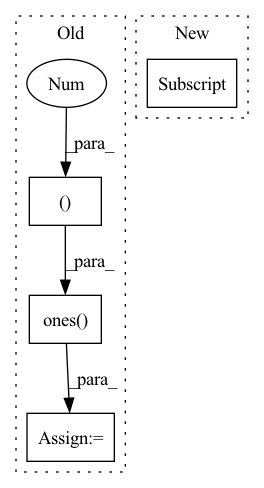

Pattern ID :3173
Before Change
seq = seq + pos_vectors
// Self-attention
causality_mask = np.tril(np.ones( (1, 1, seq_len, seq_len ), dtype=np.int) )
attn_mask = torch.from_numpy(causality_mask).to(self.device)
// attn_mask = valid_his.view(batch_size, 1, 1, seq_len)
for block in self.transformer_block:
seq = block(seq, attn_mask)After Change
seq = block(seq, attn_mask)
seq = seq * valid_mask[:, :, None].float()
his_vector = seq[torch.arange(batch_size), lengths - 1]
return his_vector
In pattern: SUPERPATTERN
Frequency: 3
Non-data size: 4
Instances Fragment ID: 16942283
Project Name: thuwangcy/rechorus
Commit Name: 03e00482d35ef5c38ecdfba21aa5cd1802873944
Time: 2020-12-12
Author: THUwangcy@gmail.com
File Name: src/models/sequential/ContrastRec.py
M Class Name: SASRecEncoder
N Class Name: BERT4RecEncoder
M Method Name: forward(3)
N Method Name: forward(3)
M Parent Class: nn.Module
N Parent Class: nn.Module
M File Name: src/models/sequential/ContrastRec.py
N File Name: src/models/sequential/ContrastRec.py
M Start Line: 267
M End Line: 284
N Start Line: 270
N End Line: 285
Before Change
seq = seq + pos_vectors
// Self-attention
causality_mask = np.tril(np.ones( (1, 1, seq_len, seq_len ), dtype=np.int) )
attn_mask = torch.from_numpy(causality_mask).to(self.device)
// attn_mask = valid_his.view(batch_size, 1, 1, seq_len)
for block in self.transformer_block:
seq = block(seq, attn_mask)
seq = seq * valid_mask[:, :, None].float()
his_vector = (seq * (position == 1).float()[:, :, None]).sum(1)
return his_vector
After Change
seq = block(seq, attn_mask)
seq = seq * valid_mask[:, :, None].float()
his_vector = seq[torch.arange(batch_size), lengths - 1]
return his_vector
Fragment ID: 16942286
Project Name: thuwangcy/rechorus
Commit Name: 7b8b88b828f814cb8da18e1305837d1bce99306c
Time: 2021-04-14
Author: THUwangcy@gmail.com
File Name: src/models/developing/ContraRecBeta.py
M Class Name: SASRecEncoder
N Class Name: BERT4RecEncoder
M Method Name: forward(3)
N Method Name: forward(3)
M Parent Class: nn.Module
N Parent Class: nn.Module
M File Name: src/models/developing/ContraRecBeta.py
N File Name: src/models/developing/ContraRecBeta.py
M Start Line: 280
M End Line: 297
N Start Line: 135
N End Line: 150
Before Change
// point_features_list.append(pooled_features.view(batch_size, num_keypoints, -1))
point_features_list.append(pooled_features)
if self.model_cfg["add_ego_mask_feature"]:
ego_mask = torch.ones( (len(new_xyz), 1 ), device=point_features_list[0].device)
ego_mask[new_xyz_batch_cnt[0]:] = 0
point_features_list.append(ego_mask)
point_features = torch.cat(point_features_list, dim=1)After Change
batch_dict["processed_lidar"]["point_features"] = []
batch_dict["processed_lidar"]["point_coords"] = []
for num in new_xyz_batch_cnt:
batch_dict["processed_lidar"] ["point_features"].append(point_features[cur_idx:cur_idx + num])
batch_dict["processed_lidar"]["point_coords"].append(new_xyz[cur_idx:cur_idx + num])
cur_idx += num
Fragment ID: 16942285
Project Name: derrickxunu/opencood
Commit Name: c7ecf237666697c93ad84b5d271c16e133ac8ccb
Time: 2022-04-01
Author: yunshuang.yuan@ikg.uni-hannover.de
File Name: opencood/models/sub_modules/vsa.py
M Class Name: VoxelSetAbstraction
N Class Name: VoxelSetAbstraction
M Method Name: forward(2)
N Method Name: forward(2)
M Parent Class: nn.Module
N Parent Class: nn.Module
M File Name: opencood/models/sub_modules/vsa.py
N File Name: opencood/models/sub_modules/vsa.py
M Start Line: 217
M End Line: 289
N Start Line: 196
N End Line: 293